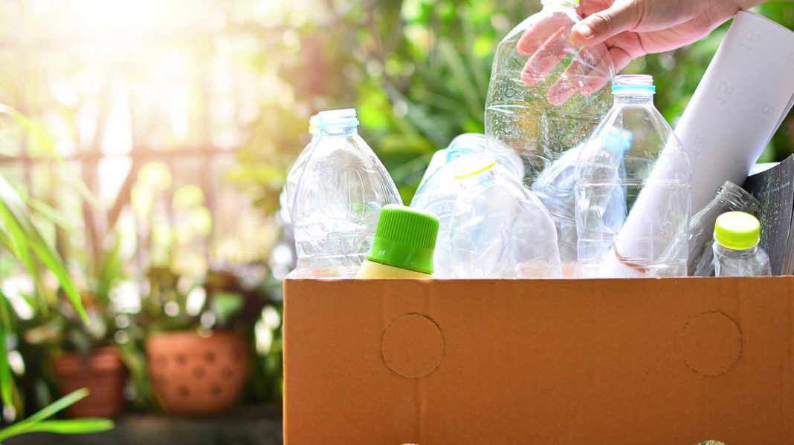

DOMESTIC WASTE
Domestic wastes are those produced by individual activities. In common with other living organisms, humans discharge waste substances to the environment that in turn re-energize the endless cycle of nature. Human activities are closely associated with ambient environment through accumulation of domestic waste. Such household hazardous waste deposit arise from the discharge of domestic activities in the form of municipal solid waste , night soil. Solid waste in the form of kitchen garbage and other household refuse is collected for landfill disposal or for re-industrialization. Many domestic waste influence indoor air quality in urban and rural areas as for example the fuel used for cooking, modern building materials, insulation, fabrics and furniture, cleaning materials, solvents, pesticides, organic material or vegetable origin and dander from domestic life
